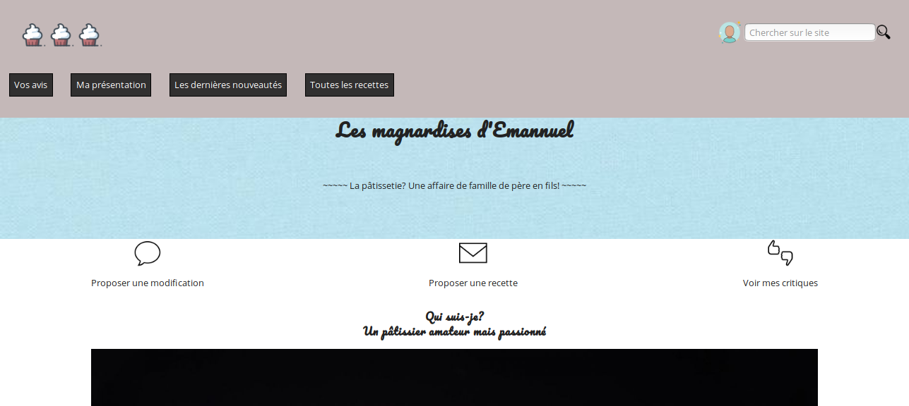
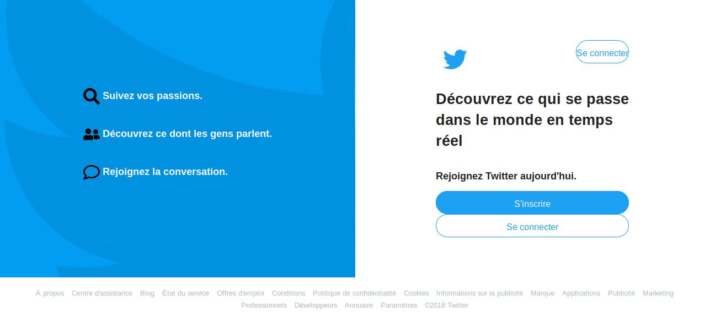
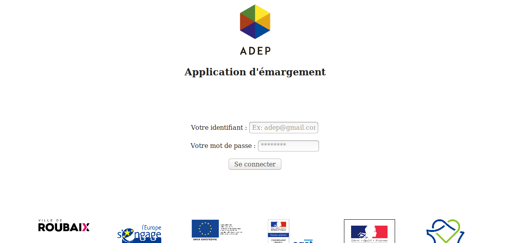

Mes projets

Les mignardises d'Emmanuel
Intégration HTML/CSS
Compréhension et application du Responsive Design avec l'usage des médias queries en CSS
Gestion des images pour le responsive design
Production d’un code CSS maintenable sur tous appareils
Compréhension et application du Mobile First
Compréhension de l’expérience utilisateur sur les appareils mobiles
Application poussée du principe DRY

Une copie du site twitter
Utiliser les attributs HTML
Perfectionner la sémantique de son HTML
Positionner ses éléments
Mettre en forme ses éléments HTML via le CSS
Utiliser des ressources extérieures pour les polices et les icônes
Produire un CSS maintenable et réutilisable
Comprendre le concept DRY

Une application d'emargement
...